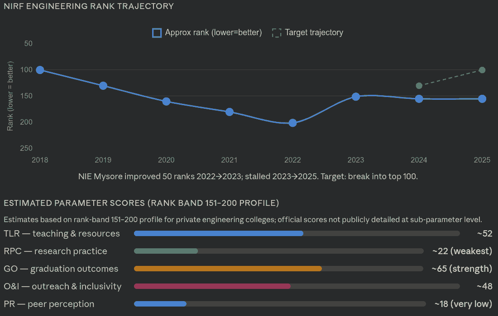
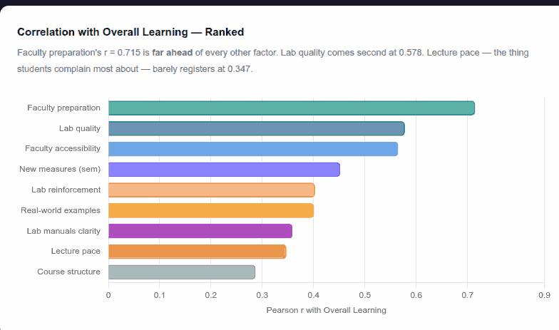
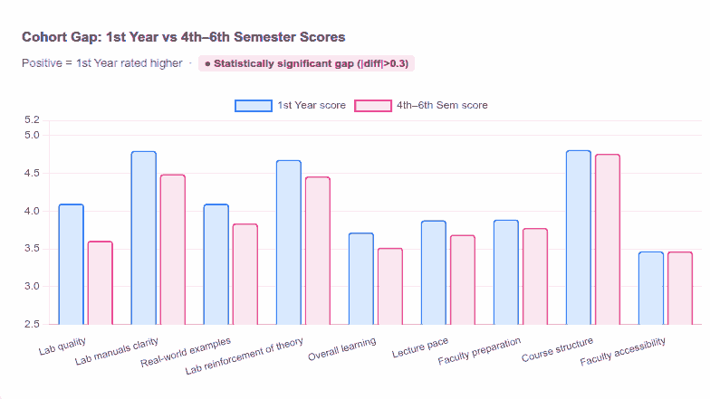

↑ Click to open full-size sketchnote in overlay · Also opens in new tab
NIE Mysore · 21 March 2026 · Faculty Session
The McKinsey in Your Pocket
How Srikanth Nadhamuni and Anand turned NIE's own hidden data into a live consulting engagement — and what 2,500 students had been silently trying to say for years.
It was supposed to be a simple Saturday morning webinar. Srikanth Nadhamuni — NIE alumnus from 1984, the man who built the Aadhaar technology, co-founder of Trustt — was presenting to the faculty of his alma mater from Bangalore. Anand was dialling in from Singapore. The topic: how AI would reshape engineering education. The mood: anticipatory, slightly formal.
Then, about eight minutes in, someone typed in the chat: "Faculty are getting the message that the meeting is at the host's allowed capacity."
There were more than a hundred faculty members trying to join, and Srikanth's Zoom licence — the business kind, the expensive kind — had a cap. In full view of the audience he was about to inspire, Srikanth did the one thing that proved his thesis better than any slide: he opened ChatGPT and asked it what to do.
"Let me quickly ask ChatGPT what to do. Give me one second."
— Srikanth Nadhamuni, approximately eight minutes into a talk about AI
The solution was to spin up a parallel Google Meet session, which Anand hosted, while Srikanth streamed audio on both. For the next ten minutes, two veterans of India's technology establishment fumbled with mic echoes, muted tabs, and a Google Meet that only some people could hear. It was gloriously human, and in its own way, deeply instructive. The old infrastructure — technical and institutional alike — was straining under new demand. That tension would be the subtext of everything that followed.
Act I
Seventy Years of Waiting
Srikanth began where all honest AI stories must: with the long decades when almost nothing worked. The term "artificial intelligence" was coined at a conference at Dartmouth in 1956. And yet, as recently as 2022, most people had never had a real conversation with a machine. The field spent the next six decades promising a future it consistently failed to deliver.
1950s–80s
AI Winter. Logic-based expert systems. Symbolic reasoning. High ambition, low delivery. Funding dried up. The term became an embarrassment.
1997
Deep Blue defeats Kasparov. A glimmer. But narrow: the machine could play chess and nothing else.
2012
Deep learning revives the field. Geoffrey Hinton's neural networks achieve superhuman accuracy on image classification. The era of features being hand-crafted by humans ends.
2017
"Attention Is All You Need" — the transformer paper — rewrites everything. Recurrent networks, sequential and forgetful, give way to architectures that can process language in parallel and hold context over vast spans of text.
2022
ChatGPT arrives. Within five days, one million users. Within two months, one hundred million. No software product in history had grown this fast.
2025–26
Reasoning models emerge. AI passes the USMLE medical licensing exam, reaches the 90th percentile on the US Bar exam, AlphaProof solves four of six International Mathematical Olympiad problems at near-gold level, and Gemini 2.5 Pro scores 336 marks on JEE Advanced 2025 — beating the human AIR 1 topper (332 marks). Anthropic's Economic Index documents which professions are most at risk.
"Human beings are the only creatures with a neocortex capable of language, and suddenly there is this other thing, other device which could also speak and respond and talk to us in ways that completely flummoxed most people. How is it even possible? Because for millions of years nobody could do this excepting human beings."
— Srikanth Nadhamuni
Srikanth had a personal story here. Decades ago, flying to the United States to do his master's degree, a stranger on the plane asked what he planned to study. "I want to do artificial intelligence," the young Srikanth said. The stranger nodded. The years passed. AI went through its winters. Srikanth built chips at Intel, built Aadhaar for a billion people, built companies in Bangalore. And then, in his sixties, the thing he had dreamed about on that plane finally arrived — not at the edges of possibility, but at the centre of everyday life.
The Slides
From the AI Roadmap Deck
Selected slides from the presentation Srikanth shared with NIE faculty. Click any image to expand.
AI History
AI Benchmarks
Hype Cycle
Jobs at Risk
What Becomes Valuable
Three Big Ideas
AI Foundation
Civil Engg Curriculum
Act II · LLM Pricing
The Thousand-Fold Fall
When Anand took over the screen, he started with a chart. Each dot was a language model. The x-axis was cost. The y-axis was intelligence.
In 2023, the best model available — the model that could do things that genuinely astounded people — cost roughly $8 per million tokens. One million tokens is about the length of the entire Harry Potter series. For $8, you could feed the whole saga to the model and ask it anything.
"Instead of one college graduate, for the same budget, I can hire 60 college graduates."
— Anand, on what happened to LLM costs between late 2023 and mid-2024
By May 2025, a model called Gemma 3 could do the same — smarter, actually — for two cents. The same task that cost $30 for GPT-4 in March 2024 cost two cents fourteen months later. Not cheaper. Not ten times cheaper. A thousand times cheaper.
The intelligence, meanwhile, had climbed from roughly "bright high schooler" to "tenured professor." For $20 a month, you had a full professorial mind available at 3 a.m. on a Saturday, with infinite patience, zero ego, and a read through every paper published in your field.
Here is where the talk became something else. Something more uncomfortable, in the best possible way.
Anand had a thought experiment. What if you hired McKinsey — the global consulting firm — to do a strategic engagement for NIE? What would the brief be? Simple: How can we improve our NIRF ranking? What factors matter? What does NIE's specific data say?
That engagement would cost, conservatively, several hundred thousand dollars, take three months, and produce a deck with lots of muted-blue slides. Instead, Anand fed the question into Claude Sonnet 4.6 with extended thinking enabled — a model at roughly PhD-candidate capability — and let it run.
"You effectively have the equivalent of a tenured professor sitting in your pocket for $20. Worth exploring."
— Anand
The result was a structured breakdown of NIRF's five pillars, their weightages, and NIE's relative performance on each. The answer was clear, and it was not flattering. NIE had started from around Rank 100 in 2018 and slid steadily to around Rank 200 by 2022 — before a partial recovery to around 151. The biggest gaps: Research and Professional Practice, and Peer Perception. The biggest strength: Graduate Outcomes.

NIE's NIRF rank trajectory, as surfaced by Claude's analysis of publicly available data. Starting from a top-100 position, NIE declined steadily — but the trend shows a partial recovery that, if sustained, could return the institution to where it was less than a decade ago.
But the analysis did not stop at diagnosis. Anand had also fed in NIE's internal publication tracker — a spreadsheet that captured which faculty, from which department, had papers in which stage of development. The AI combed through it and began generating surgical, department-level recommendations: which citation clusters to build, which research gaps to fill, which grant agencies to pitch, and which corporate CSR-to-lab routes were most likely to convert.
"Identify the underpublished niches where you can start building your citation clusters directly."
— Anand, quoting his AI analysis back to the faculty
A specific example: Ramya, a researcher in the ISE department, had produced 18 papers — the highest individual output in the dataset. Several colleagues had significant outputs too, but they were working in parallel, not together. The AI's suggestion: build a coordinated citation cluster. Publish papers that cite each other's work, not because it is gaming a metric, but because coordinated research produces stronger, more referenced work. This is what every successful research department at top universities does. NIE just had not visualised it yet.
And then Anand said something that made people pause:
"This entire analysis took half an hour with me not doing the analysis. I was doing yoga in the morning. While I was doing yoga, this was doing the analysis."
— Anand
Half an hour. Yoga. And when he returned from his mat, an institution's strategic landscape had been mapped, annotated, and organised into actionable priorities. The consultants at McKinsey have been replaced not by a robot, but by a process: feed good data in, ask the right questions, get expert-level output out. The human part — knowing which questions matter, knowing which outputs to trust — remains. But the heavy lifting has moved.
The Method
If You Know, Prompt. If You Don't, Meta-Prompt.
Srikanth asked Anand a pointed question: how did he know what to ask? Did you need Anand's particular expertise in data visualisation to replicate this? Or was it cut-and-pastable?
The answer was both liberating and slightly disorienting. Anand did not write the data analysis prompts himself. He first asked Claude: given the data I have, what are the most valuable analyses I could run that would showcase AI's power and improve NIRF rankings? Give me a dozen options, rank them, and give me the top three as ready-to-use prompts.
Claude did the thinking. Anand copied the prompts and ran them.
"This is meta-prompting. When I don't know in detail even what to ask for, I ask it. But there are some parts where I know in detail what I want... If you know, prompt. If you don't know, meta-prompt."
— Anand, on his approach to AI-assisted work
The parts where Anand did bring his own expertise were the visualisation and storytelling instructions. His data-story methodology — condensed into what he calls a "skill file" — specifies things like: write like Malcolm Gladwell, visualise like the New York Times graphics team, use tooltips for context, use pop-ups for citations. That skill file, he noted, is cut-and-pastable by anyone, regardless of whether they know anything about data visualisation.
"My expertise, so to speak, is condensed into one data story skill," he said. "I look at the output and say, no, change this, change this. But there are so many areas where I have no clue. I know nothing about NIRF. There, I will just take its expertise — and it is anyway at a tenured PhD level and above."
Act IV · The Hidden Signal
What 2,500 Students Had Been Trying to Say
There was a second dataset. NIE had been collecting student teaching feedback for years — 2,500 responses across multiple cohorts, rating faculty preparation, lab quality, course structure, accessibility, and more. Most of it had been processed into numbers and averages. The open-text comments — "students wrote about broken lab computers, they wrote about instructors who were reading from the slides, they wrote about the 85% attendance rule" — had largely sat unread.
Anand fed the entire dataset to a coding agent. He wrote a detailed prompt (itself generated by Claude) instructing the agent to merge the files, normalize the columns, compute per-department per-cohort statistics, run a cohort comparison, and surface the themes from the qualitative text.
"The teacher in the room is everything."
— The first and most important finding from 2,500 student feedback responses
The headline finding was stark. Of all the factors students rated — lab quality, course structure, lecture pace, faculty accessibility — only one had a statistically strong correlation with overall learning satisfaction. Not lab equipment. Not course design. Faculty preparation. A 71% correlation. Everything else was secondary.
The Data
What the Numbers Showed

The one thing that matters most. Faculty preparation has by far the highest correlation (71%) with overall student learning satisfaction. All other factors — labs, pacing, course structure — trail significantly behind.

Where enthusiasm goes to die. The gap between first-year student ratings and those from the 4th–6th semesters is largest for lab-related factors. The first-year experience is generally positive. Something happens in the labs by the second and third years.
The gap between first-year enthusiasm and senior disillusionment mapped neatly onto lab quality: outdated computers, MATLAB crashing, mechanical labs with broken equipment. Students had been writing this in their feedback forms for years. Nobody had aggregated it with enough statistical power to see the pattern clearly. A coding agent, given the right prompt, did it in thirty minutes while its operator held a yoga pose.
The qualitative feedback was equally pointed. Students were asking for less slide-reading. They wanted board work, interactive engagement, more real-world examples. One cluster of responses was particularly striking:
"Board teaching is more effective, please use it."
— A recurring theme in the student feedback text, as extracted by the AI
And then there was the attendance rule. The 85% attendance mandate, which exists to ensure students show up, was in multiple responses being cited as the reason students had missed placement interviews. One absence too many, and you lose exam eligibility. No eligibility, no placement. A rule designed to protect learning was, for a meaningful subset of students, actively destroying their career prospects. It was the kind of feedback that gets buried in averages. The AI surfaced it to the top.
Anand was careful to note that not every complaint reflects an objective truth. But when a theme appears repeatedly across 2,500 responses, across multiple cohorts, across multiple departments — it is no longer an outlier complaint. It is an institutional pattern.
An Interlude
The Man at Bata
Mid-presentation, Srikanth told a story. He had been shopping at a Bata store on Temple Road in Mysore — the kind of quiet, everyday errand that yields no particular insight — when a faculty member recognised him and introduced himself. They got to talking. Srikanth asked, as he does: Do you use AI in your research?
The faculty member's answer was enthusiastic. He used AI for literature reviews, for identifying research gaps, for drafting. Not experimentally. Routinely.
Srikanth pressed: before all these tools, how long did it take you to write a paper?
"He said it used to take almost six months to write a paper in our context, in the NIE context. And now he says, I think I can finish a paper within one month with all the tools that are available."
— Srikanth Nadhamuni, recounting the Bata conversation
The same human. The same brain. The same institutional constraints. One-sixth the time. The research productivity implication is staggering: if every NIE faculty member halved their paper-writing time, the institution's research output — which directly feeds NIRF's 30%-weighted Research and Professional Practice score — could double or triple without adding a single hire.
6×
Speed increase reported by one NIE faculty member after adopting AI tools for research
30%
NIRF weighting for Research & Professional Practice — the component where NIE has the biggest gap
1,000×
Fall in LLM cost in just 14 months (GPT-4 to Gemma 3, 2024–2025)
Act V · The Roadmap
Three Big Ideas
When Srikanth returned to his slides, the theoretical stage was set. Now came the prescription. What should NIE actually do? Three ideas, in order of precedence.
Idea 01
AI-Integrated Curriculum
Every department — civil, mechanical, ECE, computer science, mathematics — must embed AI into its curriculum. Not as an elective. As a core. A Common AI Foundation for all students, topped by department-specific applications. AI literacy is the new literacy.
Idea 02
Phygital Delivery
Combine the world's best digital learning content (NPTEL, MIT OpenCourseWare, DeepLearning.AI) with physical classroom engagement. MOOCs have a 6.5% completion rate in isolation. Put them inside a classroom with a teacher, and that changes. Physical + Digital = Phygital.
Idea 03
From Theory to Practice
Stop teaching students how to memorise information that an AI can recall in a fraction of a second. Start teaching them how to build things, solve hard problems, and think in systems. The MIT "How to Make Almost Anything" model, adapted for Mysore.
The Completion Rate Problem
The phygital idea addresses a specific and under-discussed failure. Over the past fifteen years, tens of millions of dollars have gone into producing some of the finest instructional material the world has ever seen: MIT OpenCourseWare, Harvard's edX courses, India's own NPTEL, Coursera, DeepLearning.AI. The best professors on the planet, recorded in HD, freely available to anyone with an internet connection.
And the completion rate hovers around 6.5%.
"Fantastic courses, the best teachers in the world are teaching courses, but completion rate is low. Why? Because self-motivation amongst youngsters is low."
— Srikanth Nadhamuni
The MOOC revolution's great unfinished business is motivation. Digital content scales infinitely; human attention does not. But put that same content inside a classroom — where there is a teacher to field questions, peers to compete with, tests to prepare for, and the social friction of attendance — and completion rates climb dramatically. Srikanth's insight was simply to stop treating physical and digital as alternatives and start treating them as complements.
The Civil Engineering HOD Balaji had already done the practical work: a semester-by-semester AI-integrated curriculum for his department, complete with NPTEL course links, week-by-week delivery plans, final year project ideas (AI-powered structural audit tool; machine learning flood risk mapping of the Mysore district), and a ₹3–3.5 crore budget ask for the necessary infrastructure. It was the most concrete piece of institutional planning Srikanth had seen, and he held it up as the template every department should follow.
The Raspberry Pi Argument
The final idea — the shift from theory to practice — was illustrated with a personal story. Srikanth had spent a semester at MIT in late 2025, taking a course called How to Make Almost Anything. Every week, the students had to build something physical — not design it, not write about it, but actually build it. His final project was an AI assistant to help manage his overwhelming inbox and calendar: a custom PCB with a microcontroller, a microphone, a speaker, and a matrix display, all connected and programmed in Python, a language he barely knew.
"I learned 10x more than what I would if I did only theory. In those three months, I learned more than many years of my work. Okay? So what it tells me is that if students along with faculty do projects — when they do things, they learn a lot."
— Srikanth Nadhamuni
The argument is uncomfortable for institutions built on lecture-hall pedagogy, but the evidence is hard to ignore. Theoretical knowledge, Srikanth observed, is now practically free: "Ask ChatGPT, it'll give it to you in a fraction of a cent." What is expensive — and therefore valuable — is the ability to take that knowledge and build something real. Systems thinking. Debugging under pressure. The willingness to fail, iterate, and try again.
"Memorizing that information is not going to get you jobs."
— Srikanth Nadhamuni
The Oldest Argument
We Have Been Here Before
One question hovered over the entire session, unspoken but present: if students can use AI to answer any question, will they learn anything at all? Srikanth had been asked this at the Ministry of Education's Akhil Bharatiya Shiksha Samagam, with IIT directors and AICTE in the room. He had a ready answer, and it was historical.
"When I started college, there was a debate whether calculators are good or bad. And there was one predominant opinion that oh, these boys and girls are going to become dullards. They're going to do all the math using calculators and they're not going to learn how to do math."
— Srikanth Nadhamuni
That debate lasted about five years. Then it quietly ended, not because people decided calculators were harmless, but because something more interesting happened: students stopped doing arithmetic and started doing algebra. And from algebra to calculus. The floor of what was worth learning rose, and with it the ceiling of what was achievable.
The same is happening now, faster. AI does not just calculate — it writes, codes, analyses, and reasons. So where does the floor move to? Srikanth was honest: "I don't know the answer precisely for that." But from what he had observed at MIT — where the same question was being debated by people who had no more certainty than anyone else — the direction was clear: harder problems, not easier ones. Open-book exams that require AI to solve, because the problems are hard enough that AI is necessary. Assessment of judgment, not memory.
In his own companies, hiring processes had already adapted: "We deliberately make the problems so hard that they have to use AI to solve the problem, because we want to ensure that they know how to use AI and they can productively use it and solve the problem quickly." The credential being evaluated is no longer knowledge. It is the ability to direct intelligence — artificial and human — toward problems that matter.
The Detailed Roadmap
More from the Presentation
The full presentation covered curriculum design for every department, AI ethics frameworks, phygital delivery architecture, and research acceleration. Click any slide to expand.
Phygital Architecture
AI Research Tools
Theory vs. Practice
AI Ethics
Digital Campus
Research Acceleration
Key Takeaways
What NIE — and Every Engineering College — Should Do Now
01
The cost of intelligence has fallen 1,000 times in 14 months
The same analytical task that cost $30 per Harry Potter–sized document in early 2024 costs two cents today. This is not a future trend. It has already happened. Any institutional strategy that does not account for this is already outdated.
02
Your own data holds answers you haven't heard yet
NIE had 2,500 student feedback forms. The insight — that lab quality collapses between first year and senior years, and that faculty preparation predicts learning outcomes above all else — was in those forms all along. AI didn't create the insight. It found it, in thirty minutes, while Anand did yoga.
03
Research productivity can multiply without adding headcount
One NIE faculty member reduced his paper-writing time from six months to one month by adopting AI tools. Extrapolated across a department, that is a 6x increase in research output. The NIRF gap in Research and Professional Practice is very much closable — with existing faculty, using existing data, today.
04
Meta-prompting removes the expertise barrier
You don't need to know how to do data analysis to get a data analysis done. Ask the AI what to ask the AI. The loop is: define the goal → ask the AI for prompts → run those prompts → evaluate the output. Anyone can start this process today, with a $20/month subscription.
05
AI integration must span every branch, not just CS
Structural health monitoring, flood risk mapping, drug discovery, crystallography — these are not computer science problems. Every engineering domain now has AI applications that go beyond ChatGPT prompts. The Civil Engineering curriculum redesign at NIE is a template, not an exception.
06
The calculator argument wins again
Every generation debates whether the new tool will make students lazy. Every generation eventually sees the floor of required knowledge rise. The question is not "should we let students use AI?" The question is "what problems are now worth solving, given that AI exists?"
07
The digital campus is a prerequisite, not a luxury
Anand's analysis worked because the feedback data was digital. Every insight from the student feedback, every paper in the publication tracker — these were useful because they were structured and machine-readable. Paper records and analogue processes cannot be analysed. Digitise first, optimise second.
08
Pearls of wisdom don't come from the top
Srikanth said it plainly: the best ideas for this transformation will come from the people who actually work with students, run the labs, write the research, teach the classes. Institutional transformation succeeds when it is bottom-up, not top-down. The role of leadership is to create the conditions for those ideas to surface and be heard.
Further Reading
Explore the Analysis
The live analyses Anand ran during the talk are publicly available. These are not summaries — they are the actual AI outputs that were shared on screen with NIE faculty.
Published in January 2025, Anthropic's Economic Index analysed real usage patterns from Claude users to map which occupational categories are most exposed to AI disruption. Management, Business & Finance, Computer & Math, Legal, and Arts & Media appeared at highest risk. Physical trades (construction, transportation, agriculture) showed very low exposure. The data was drawn from actual Claude conversations — not theoretical modelling.
GPT-4 scored in the 90th percentile on the Uniform Bar Exam — roughly equivalent to a well-prepared law school graduate. In early 2023, GPT-3.5 scored around the 10th percentile. That 80-percentile jump occurred in a single model generation, over roughly one year.
Studies consistently find that fewer than 10% of enrolled students complete a MOOC. A 2019 meta-analysis across 18 major platforms found an average completion rate of 6.5%. The phenomenon persists even in courses with strong reputations and high enrolment, suggesting it is structural rather than content-related.